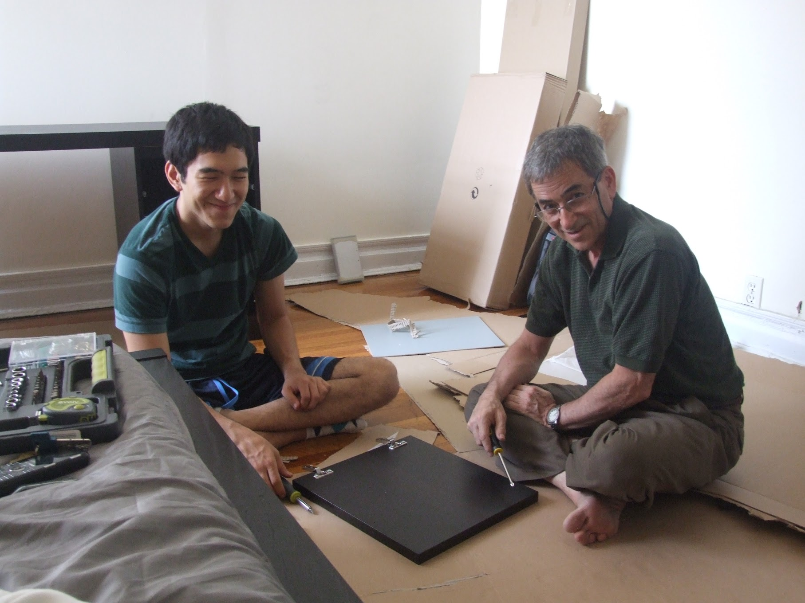

Visiting Chicago
Saturday, July 9, 2011
·
posted to College Confidential
Last week, Amir and I went to Chicago to visit Daniel who is staying on campus there this summer for the internship he got with a firm in downtown Chicago. What was supposed to be a short vacation filled with visits to the museums, architecture walking tours, and a survey of nice restaurants turned out to be three solid days of furniture shopping at IKEA and assembly work in Hyde Park in an off campus student apartment. Yet, this was the most emotionally rewarding vacation ever for both of us. Daniel expressed such a delight at having a nicely appointed room with matching furniture and bed linen accessories. His almost childlike and innocent sense of joy and outburst of genuine gratitude for our “service” touched me deeply.

I must say, though, inspiring these two unskilled day laborers to finish the furniture assembly work was a hard work on my part- they delighted so much in talking about politics, ideas, philosophy, and the meaning of education when they should be paying 100% of their attention to the task at hand....
Toward the end of the trip Daniel said “Mom, I am so glad that you are determined to do everything you can to be a long term survivor, because I want you to be around to teach my kids your values.” I was almost in tears. Yes. “WHEN” I get to spend time with his kids, and if he and his spouse are still interested in having me pass down my values to them, I will savor every moment and opportunity to do so. In order for this “when” to happen, I need to turn a lot of if’s to when’s along the way. Daniel just gave me the biggest incentive to do everything I can to achieve that feat.
Oh, regarding the “Stupid Things People Say…” thread, my contribution was the question I got from a health insurance agent when I called to make sure that all necessary pre-approval, if any, was in order for the major abdominal surgery I was scheduled to get (total abdominal hysterectomy with concurrent removal of all other reproductive organs). She asked “Is it an inpatient or outpatient?”